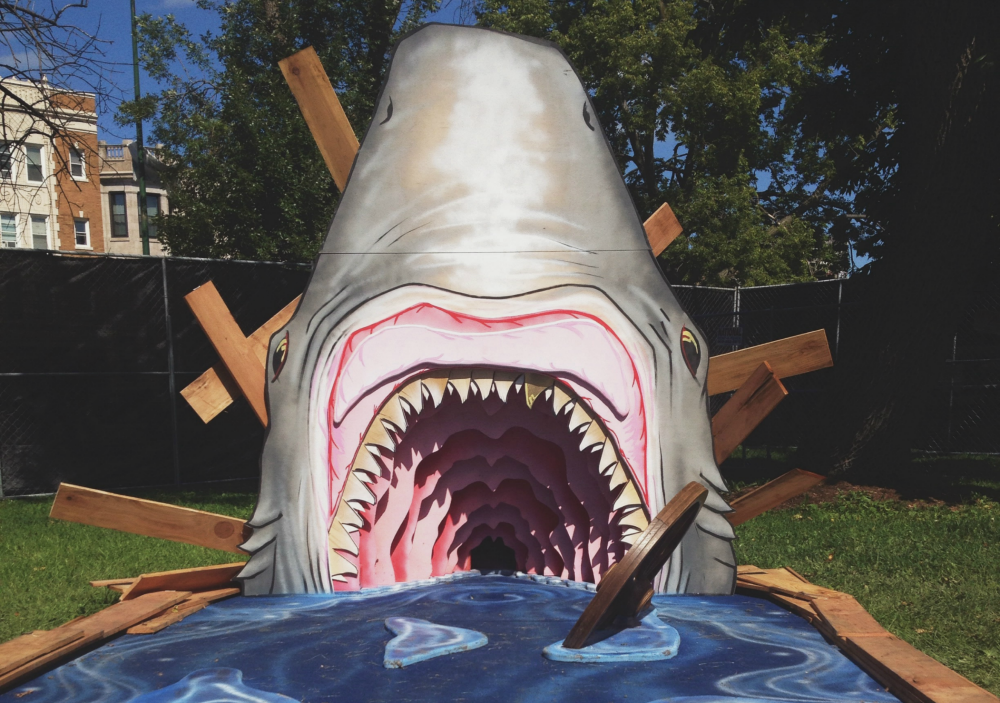

A Love Letter to Riot Fest
I love Lollapalooza. I truly do. In spite of this, the thing that makes Riot Fest so great is that it is absolutely nothing like Lollapalooza. There are no delicious lobster corndogs to fill your empty stomach or sponsored tents to help you hide from the sweltering sun. But Riot Fest needs neither of those things, because there is fair food and it takes place in September.
The punk scene has always identified with doing things yourself. Riot Fest, as a punk and alternative music festival, is the ultimate depiction of the great things that can happen with a DIY attitude. The festival started as an assortment of shows held at various venues in Chicago and gradually expanded into a 3-Day event held in Humboldt Park.
Riot Fest's methods of self promotion are humorous. If you attend the festival you can buy shirts and hats that say, "Riot Fest Sucks," and their Twitter account avoids professionalism much to the amusement of their followers.
The stages at Riot Fest all lack sponsors. They sport simple titles like "Riot Stage" and "Roots Stage." The lineup boasts a mix of popular punk and alternative acts, as well as others that would likely never find their way onto the bill of a "mainstream" festival. Rather than sponsor tents, an expansive collection of carnival games (including a custom mini golf course called Riot Putt) and rides are available to attendees. To fit in with the carnival theme continues with the inclusion of food booths that will be more than happy to sell you elephant ears and cornogs. If this kind of food isn't really your thing, there are also food trucks. Most importantly: Cheesie's.
The other thing that makes Riot Fest so special is all of the fans. People that go to Riot Fest are there for the music. They're there to have a good time, but the biggest source of their good time is being able to watch one of their favorite bands put on a mindblowing show. Everything else is secondary.
Because of Riot Fest, I've seen Weezer play the Blue Album in its entirety, managed to survive being front row in a Bad Religion mosh pit and caught a few guitar picks from my favorite bands. I've also met some pretty incredible people who are just as into music as I am. They say that punk is dead, and whether that's true or not, Riot Fest isn't such a shabby way to bring it back every once in awhile.